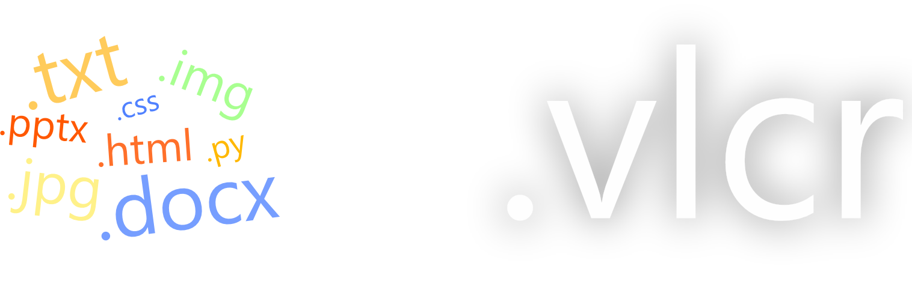

Zažijte produktivitu ještě dnes!
Spousta aplikací používá starý systém mnoha různých typů souboru. Když chce člověk vytvořit textový dokument, musí si pamatovat, že ho má uložit jako .txt. Když chce člověk napsat prezentaci, nezbývá mu, než si pamatovat, do jakého typu souboru ji má uložit.
Chce to změnu.
Náš unikátní kancelářský balíček VLČR Kancelář sjednocuje všechny typy souborů do jednoho jediného.

Co Kancelář nabízí?
Průzkumník
Jednotné prostředí pro správu dokumentů VLČR.
Písař
Tvorba a úprava textových dokumentů.
Prezentář
Vytváření a zobrazování prezentací. Rychle a jednoduše.
Počítář
Tabulkový nástroj VLČR.
Jednotný systém souborů
Speciální formát .vlcr sjednocuje práci s dokumenty napříč aplikacemi Kanceláře. Umožňuje jednoduchou organizaci obsahu bez nutnosti řešit jednotlivé typy souborů.
Jednoduché ovládání
Přehledné rozhraní dostupné pro každého.
Jeden ekosystém
Jednotné prostředí a vzájemně propojené aplikace.
Stáhnout VLČR Kancelář
Vyberte svou platformu
Níže vyberte operační systém. Stránka automaticky vyhledá nejnovější vydání na GitHubu.